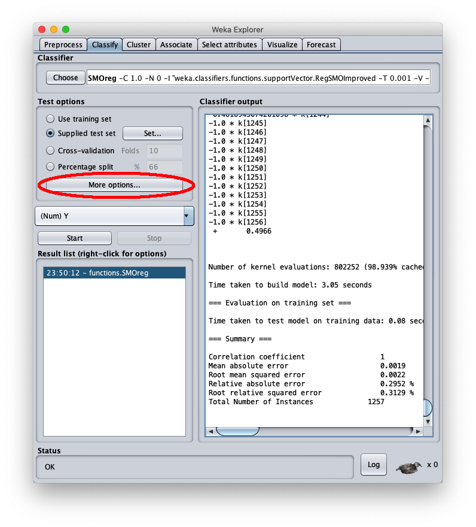

Regressione con SMO per SVM con kernel PUK in Weka
Questo post mostra un uso in Weka del regressore SMOreg (Sequential Minimal Optimization) che è un efficiente algoritmo di machine learning per SVM (Macchine a Vettori di Supporto) per implementare l'approssimazione
di funzioni reali di una variabile continue e limitate definite in un intervallo dei reali tramite kernel PUK (Pearson VII function-based Universal Kernel);
l'obiettivo è di dimostrare che la regressione classica del machine learning può raggiungere interessanti livelli di accuratezza con tempi di learning estremamente brevi.
Anche se le reti neurali di tipo MLP (Multi Layer Perceptron) possono essere considerate degli approssimatori universali di funzioni (si veda Approssimazione con percettroni multistrato altamente configurabili su questo sito web),
un classico algoritmo supervisionato di regressione di machine learning, come quello presentato qui, può arrivare a livelli di accuratezza accettabili
e con un costo computazionale decisamente più basso rispetto a quello di un MLP.
Nel mondo reale i dataset preesistono alla fase di apprendimento, infatti questi vengono ottenuti estraendo dati da database di produzione o file Excel, dall'output di strumenti di misura, dai data-logger collegati a sensori elettronici e così via,
e quindi adoperati per le fasi di learning successive;
ma poiché qui il focus è la regressione in sé e non l'approssimazione di un fenomeno reale, i dataset utilizzati in questo post sono stati generati sinteticamente a partire da funzioni matematiche:
questo ha il vantaggio di poter stressare l'algoritmo e vedere per quali tipologie di dataset l'algoritmo ha accuratezza accettabile e per quali invece l'algoritmo fatica.
Sequenza completa di passi
Lanciare il programma Weka dell'Università di Waikato (Nuova Zelanda);
in questo post la versione di Weka utilizzata è la 3.8.3, ma quanto detto funziona anche con versioni precedenti; Weka richiede che il runtime di Java sia correttamente installato.
Una volta lanciato il programma Weka, compare la seguente finestra:

Quando la finestra Weka Explorer viene visualizzata:


Il dataset sintetico caricato è generato con la funzione sinusoide $f(x)=\sin x$ nell'intervallo $[-2 \pi, 2 \pi]$; la finestra Weka explorer (posizionata sul tab Preprocess si presenta così:
Ai fini degli obiettivi di questo post possiamo ignorare questo tab, si apra quindi il tab Classify come evidenziato in rosso e l'interfaccia utente appare così:


Per scegliere l'algoritmo PUK si prema il bottome Choose e questa popup viene mostrata a video:

Si selezioni il radiobox Using training set per indicare a Weka di utilizzare tutti i dati del dataset (il file learnds.arff caricato prima) per il learning, quindi si prema il bottone Start per effettuare il learning; dopo pochi secondi di elaborazione la parte destra della finestra mostra le metriche dell'apprendimento:

Per applicare il dataset di test a questo modello appena addestrato selezionare il radiobox Supplied test set

Premere il tasto Open URL...; appare la seguente finestra:

La finestra chiamnante mostra informazioni generali sul dataset di test:


e premere il bottome More options... e la seguente popup appare:
premere Choose alla voce corrispondente a Output predictions e compare:
premere Choose alla voce corrispondente a Output predictions e compare la popup ad albero:


- in attributes inserire il valore 1 per scrivere nel file cvs in uscita anche il valore della variabile indipendente $x$
- in outputFile inserire il path del file csv che Weka creerà/sovrascriverà quando si sarà applicato il dataset di test al modello appreso.


premere il tasto destro del mouse sul modello e sul menu che si apre scegliere Re-evaluate model on current test set:

l'errore quadratico medio è 0.0022, che è un valore molto interessante; nella stessa area è visibile la parte finale del file csv; scrollando l'area è possibile vedere l'intero file csv, che comunque è stato salvato sul disco (setting Output predictions).
Il file csv generato contiene 5 colonne:
- inst# l'indice della riga 1-based (si ricorda che la prima riga del file è l'header ed è da considerare come riga 0)
- actual il valore della variabile dipendente del dataset di test
- predicted il valore corrispondente calcolato dal modello
- error la differenza tra valore attuale e valore predetto
- X il valore della variabile indipendente $x$
Con un qualsiasi sistema di grafici cartesiani a partire da file csv tracciare i grafici di tipo scatter X/Y delle coppie:
- X e actual
- X e predicted
Qui è stato usato Microsoft Excel, ma va benissimo un qualsiasi software equivalente o anche un servizio web online; il risultato è il seguente:

Alternative
Per esempi di approssimazione polinominale in .NET si veda Regressione polinomiale con Accord.NET.
Per approfondire invece l'approssimazione di una funzione reale di una variable con un MLP si veda Approssimazione di una funzione reale di una variabile con TensorFlow e Approssimazione di una funzione reale di una variabile con PyTorch.